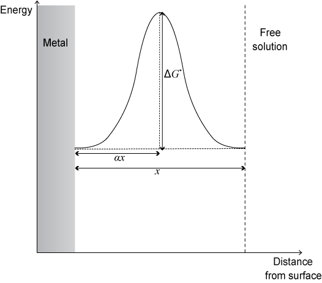
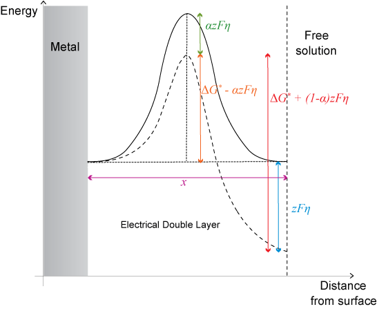
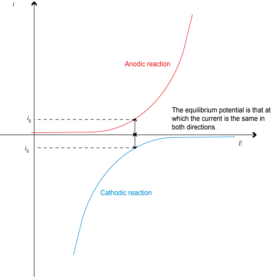
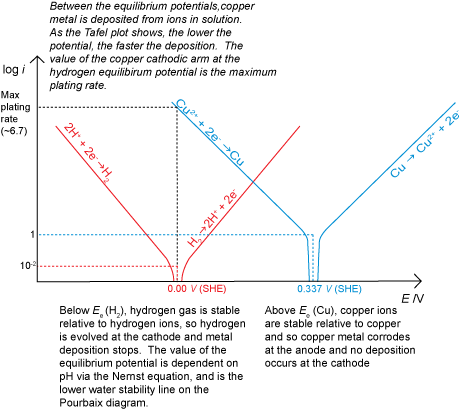
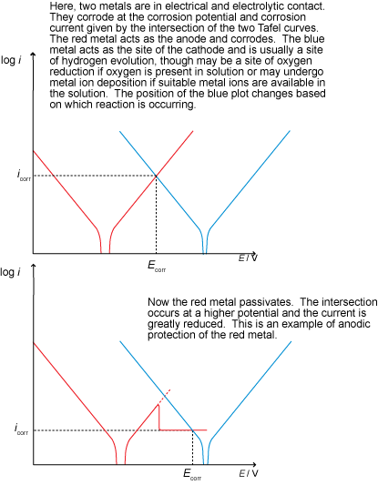
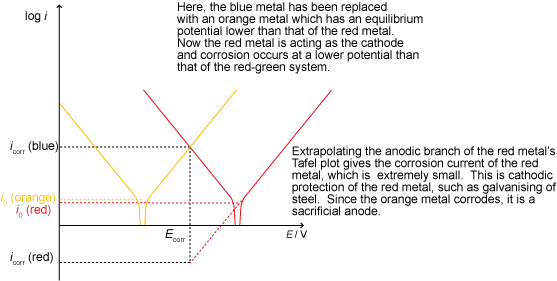
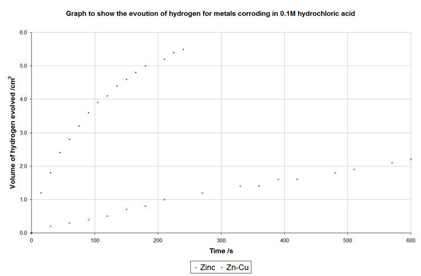
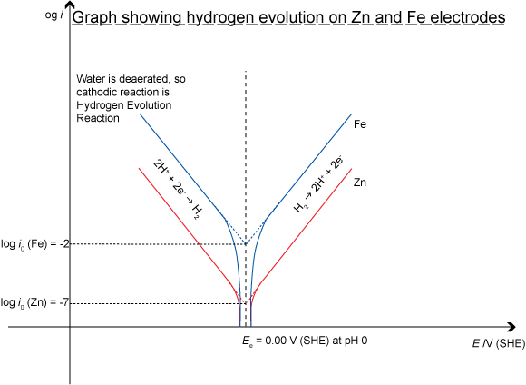

The original, as published: DoITPoMS, University of Cambridge, Kinetics of Aqueous Corrosion. CC BY-NC-SA 4.0, https://creativecommons.org/licenses/by-nc-sa/4.0/. As published, from https://www.doitpoms.ac.uk/tlplib/aqueous_corrosion/ https://www.doitpoms.ac.uk/tlplib/aqueous_corrosion/
We are reliant on metallic structures to support our everyday activities, be it getting to work, transporting goods around the world, or storing and preserving food. Metals are everywhere.
However, from the moment most metals come into contact with water, they are subject to sustained and continuous attack which can lead to the metal corroding and failing to do its job.
It is therefore important to understand when corrosion will occur, how fast it will proceed and what can be done to slow down or stop it. Whether or not corrosion occurs at all is dependent on thermodynamics and is covered in the The Nernst Equation and Pourbaix Diagrams.
How to predict and control the rate of corrosion is covered in this TLP.
Corrosion involves two separate processes or half-reactions, oxidation and reduction. Oxidation is the reaction that consumes metal atoms when they corrode, releasing electrons. These electrons are used up in the reduction reaction.
When a metal corrodes in solution, the two halves of the reaction can be separated by large distances. This is unlike oxidation in air, when one reaction occurs at the surface of the film and the other at the surface of the metal, meaning that the reaction sites are always close to each other. In fact, in aqueous solution the reaction separation can be very large and as long as there is both electronic and electrolytic contact between the anodic and cathodic sites, corrosion will occur regardless of separation of the half-reactions.
An electrical double layer is the name given to any region between two different phases when charge is separated across the interface between them.
In aqueous corrosion, this is the region between a corroding metal and the bulk of the aqueous environment (“free solution”). In the double layer, the water molecules of the solution align themselves with the electric field generated by applying a potential to the metal. In the Helmholtz model, there is a layer of aligned molecules (or ions), which is one particle thick and then immediately next to that, free solution. In later models (proposed by Louis Georges Gouy, David Leonard Chapman and Otto Stern) the layer is not well defined, and the orientation becomes gradually less noticeable further from the metal surface. However, for the purposes of determining the rate of corrosion, the Helmholtz model will suffice.
To corrode, an ion in the metallic lattice must pass through the double layer and enter free solution. The double layer presents a potential barrier to the passage of ions and so has an acute effect on corrosion kinetics.
Like all chemical processes, the kinetics involved in corrosion obey the Arrhenius relationship:
\[k = {k_0}\;\exp \left( {\frac{{ - \Delta G}}{{RT}}} \right)\]
where k is the rate of reaction, k0 is a fundamental rate constant, ΔG is the activation energy. R and T have their usual meanings of the ideal gas constant (8.3145 J K−1 mol‑1) and temperature (in Kelvin) respectively.
The chemical nature of corrosion suggests that it is driven by a change in Gibbs Free Energy, ΔG but the electrical nature of corrosion leads to the conclusion that a voltage drives the reaction. Since both quantities can be considered as the driving force, they must be equivalent and, indeed they are related through the expression ΔG = −z F E , where z is the stoichiometric number of electrons in the reaction, F is Faraday’s constant, 96485 C mol−1 and E is the voltage driving the reaction.
Note the minus sign, used to correct for the conventions that a chemical reaction only proceeds if ΔG is negative but an electrical reaction only occurs if E is positive.
Since the absolute driving force of an applied voltage depends on what reaction is occurring, potentials are usually defined as the difference between applied voltage and the equilibrium potential of the reaction. The difference between applied potential and equilibrium potential is defined as the overpotential, η.
η = E − Ee
It is worth noting that the “equilibrium potential” is not necessarily the standard electrode potential of the reaction, as this has the added requirement that all reagents are in standard states. The equilibrium referred to is, in fact the “equilibrium electrode potential”, Ee, which is specific to every electrode individually.
If an electrode is at its equilibrium potential, both forwards and backwards reactions occur at the same rate, so no net reaction will occur. Net reactions only occur when the potential is moved away from equilibrium.
Under equilibrium conditions, the energy landscape is symmetrical when free energy is plotted against distance from metallic surface:

The fraction of the width of the double layer that must be crossed to reach the excited state is known as the symmetry factor, α.
However, when overpotential is applied, the energy is changed on the free solution side of the plot by an amount -zFη. The overpotential is distributed so that a fraction, α lies across the barrier in the forward direction and (1 − α) lies across the barrier in the backward direction.
The overall effect of the overpotential is to lower activation energy for the forward reaction by α z Fη. Thus the Arrhenius relation now becomes:
\[{k^′} = {k_0}\;\exp \left( {\frac{{ - (\Delta {G^0} - \alpha zF\eta )}}{{RT}}} \right)\]
\[{k^′} = k\;\exp \left( {\frac{{\alpha zF\eta }}{{RT}}} \right)\]
where k’ is the new rate, k is the rate without the overpotential.

Armed with the new Arrhenius expression and the generalised reaction:
M ⇌ Mz+ + ze,
where M is a metal that forms Mz+ ions in solution, we can now derive an equation describing corrosion kinetics.
Consider the rate of the anodic (oxidation, corrosion) reaction, ka
\[{k_{\rm{a}}} = k_{\rm{a}}^{'}\;\exp \left( {\frac{{ - \Delta G^0}}{{RT}}} \right)\]
Since the reaction involves the release of electrons, its progress can be expressed as a current density, i (current per unit area).
The exchange current density, i0 is defined as the current flowing in both directions per unit area when an electrode reaction is at equilibrium (and, hence, at its equilibrium potential).
If i0 is small, then little current flows and the reactions at dynamic equilibrium are generally slow. Likewise, a high i0 gives a fast reaction. The metal itself affects the value of i0, even if the reaction does not involve the metal directly.
\[{i_0} = z{\rm{F}}{k_{\rm{a}}} = z{\rm{F}}k_{\rm{a}}^{'}\;\exp \left( {\frac{{ - \Delta G^0}}{{RT}}} \right)\]
If overpotential is applied, the activation energy is changed, as described on the previous page:
\[{i_{\rm{a}}} = i_{0}\;\exp \left( {\frac{{\alpha z{\rm{F}}\eta }}{{RT}}} \right)\]
This is one form of the Tafel equation.
The Tafel equation can also be written in several equivalent ways, as shown here.
The quantity \(\frac{{2.303\,RT}}{{\alpha z{\rm{F}}}}\) is given the symbol ba and is known as the anodic Tafel slope. It has units of volts per decade of current.
Similarly, if the cathodic reaction were to be considered, the quantity would be \(\frac{{ - 2.303\,RT}}{{(1 - \alpha )z{\rm{F}}}}\) since (1 − α) is applicable instead of α and E - Ee is negative. This quantity is the cathodic Tafel slope, bc. .
The usual form of Tafel’s equation is η = a + ba log ia where \(a = \frac{{ - 2.303\,RT}}{{\alpha z{\rm{F}}}}\;\log {i_0}\)
Through consideration of the reaction as both a chemical and electrical process and manipulation of algebra, we have found that the applied potential is proportional to the log of the resulting corrosion current. This is certainly different to Ohmic behaviour where applied potential is directly proportional to the resulting current.
Using the Tafel equation, useful plots can be drawn to help find corrosion rates.
In a plot of i vs. E, for a single electrode, the following is seen:

Considering the sum of the currents and then ignoring the signs and then taking log of current gives a plot known as a Tafel plot, which is described in the animation below for a single electrode:
As can be seen, at Ee, the net current flow is 0, as must be the case for equilibrium (the anodic and cathodic currents are equal and opposite). The straight-line sections have gradients related to the Tafel slopes – anodic, ba and cathodic bc. (If we had plotted E on the vertical axis and log i horizontally the gradients would be equal to ba and bc. )
There are several important points to note:
N.B. There is no universally adopted standard to plot log (i) on the y-axis and E on the x-axis. In fact, it is more common to see polarisation curves plotted as E vs. log (i). In this TLP graphs will be plotted as log (i) vs. E.
Tafel plots can be linked to Pourbaix diagrams:
Corrosion occurs when two electrodes with different equilibrium potentials are in both electronic and electrolytic contact. We can use Tafel plots to predict corrosion rates as explained in the animation below.
So far all reactions have been assumed to proceed (if they are thermodynamically possible) at the rate predicted by the Tafel analysis. In reality, reactions are often limited by other factors and don’t achieve this maximum rate. One such factor is the availability of oxygen in solution.
In aqueous solutions that contain dissolved oxygen, an important cathodic reaction is the oxygen reduction reaction:
O2 + 4 H+ + 4 e- → 2 H2O
The reaction takes place at the surface of the metal and so oxygen must be present at that site. If the reaction occurs quickly enough, the concentration of oxygen at the surface cannot be maintained at the same level as that in the bulk of the solution. In this case the rate of oxygen diffusion may become a limiting factor. With less oxygen available, the cathodic reaction slows down and so must the anodic reaction to conserve electrons (electrons can only be used up at the same rate as they are released as charge must always be conserved).
Fick’s first law* can be used to find the maximum rate of oxygen diffusion. Since each oxygen molecule consumes 4 electrons, according to the reaction above, this maximum rate of diffusion corresponds to a maximum current density that the oxygen reduction reaction can sustain and, hence, a maximum corrosion rate for the anode (since electrons must be used at the cathode at the same rate as they are released at the anode).
Since the corrosion current is limited, the cathodic arm of the Tafel plot is flattened:
Oxygen reduction is not the only process that deviates from the Tafel analysis. The hydrogen evolution reaction can be limited by the rate at which molecules desorb from the cathode surface. This is usually the rate-determining factor for hydrogen evolution on iron, copper, platinum and other metals. Relatively few metals behave as predicted by the Tafel analysis, examples being cadmium, mercury and lead.
Another effect that limits the rate of corrosion is passivation. If the potential of an electrode is raised above some passivation potential, a passive product may become favourable forming a layer on the surface of the anode. In this case, the rate of corrosion can be much reduced. This is characterised by the value of log (i) peaking at a critical current density, before falling to some lower value.
In other words, the anodic arm of the Tafel plot reaches a peak and falls away to a roughly horizontal region:
It is possible to deliberately drive the reaction into the regime in which a passive layer forms. This technique is used in the process known as anodising in which thick oxide layers are developed on aluminium components.
The Tafel plot below shows two electrodes. The cathodic branch of the electrode with the higher equilibrium potential (shown in blue) is diffusion limited. The anodic branch of the electrode with the lower equilibrium potential (shown in red) is passivated. The resulting intersection is often a good representation of real corrosion scenarios, where the metal can passivate and there is a limited oxygen supply for the cathode.
Armed with the Tafel equation and Tafel plots, it is now possible to predict whether a particular setup will result in corrosion and if so how fast the corrosion will be.
In order for corrosion to occur, there must be a suitable anodic reaction and an appropriate cathodic reaction. This is manifested as an intersection of a cathodic branch and an anodic branch on a Tafel plot. The point of intersection gives the corrosion potential and the corrosion current (or, more accurately the log of the corrosion current density).
The rate of corrosion is governed by all the factors discussed previously. When all the effects are taken into account, Tafel plots get quite complicated and some interesting effects occur:
Faraday’s law allows the current density to be expressed as the mass of material lost per unit time.
The calculation involves a few simple steps. For a corrosion reaction:
Overall, the thickness of metal lost per unit time is given by the formula:
$$t = {{i{m_{\rm{M}}}} \over {\rho ez{N_{\rm{A}}}}}$$
where t = thickness (m), i = current density (A m-2), mM = molar mass (kg mol-1), e = electronic charge (C), z = stoichiometric number of electrons in oxidation reaction, NA is Avogadro’s number.
It is also possible to have a situation where corrosion does not occur for thermodynamic reasons, for example if there was a driving force for the reverse of the corrosion reaction to occur due to an applied potential. This would result in deposition (electroplating) if there were metal ions in solution available to be reduced. If deposition is being carried out commercially, for example to electroplate silver onto stainless steel cutlery, the rate must be maximised to make production as cost effective as possible. However, care must be taken to avoid the hydrogen evolution reaction starting at the cathode in addition to the metal ion deposition.

We can now draw Tafel plots and use them to determine corrosion current densities and corrosion rates. Below is an interactive graph that allows the corrosion rates of several metals to be investigated. Notice how, in this idealised situation, i.e. with no diffusion limits, the corrosion rate in aerated water can be extremely high. This shows how important a consideration the diffusion layer is.
There are several ways kinetics can be employed to reduce or prevent corrosion.
A barrier can be employed to prevent the electrolyte coming into contact with the metal.
Tin is the usual barrier, as it does not react in most aqueous solutions. It is used in food cans and has the useful property that if the barrier fails, then the steel in the can corrodes. If zinc were used instead it would begin to act as a sacrificial anode should the barrier fail. This would protect the steel but the distinct disadvantage is that hydrogen is evolved at the steel cathode and if it were to build up inside a closed container an explosive situation could arise.
Other inert metals may be used as barriers, as can polymers, ceramics and paint.
Anodic protection involves raising the potential of the metal in order to develop a passivating layer (such that protection is due to inhibited kinetics).
Sodium carbonate, a base, acts to remove the acidity in the solution and drives the reaction towards the right of the Pourbaix diagram. Above a certain pH, metals tend to form a passive layer as a passive species is stable under these conditions.
Potassium chromate works by providing a source of chromate ions that penetrate the surface of the metal, forming a stable, passive chromium oxide layer on the surface of the anode and thus prevents corrosion by forming a passivation layer in a similar way to that seen in stainless steels.

Cathodic protection involves lowering the potential of the metal in order to make it more thermodynamically stable. This may be done using an impressed current (a supply of electrons from an external source) or with a sacrificial anode, as shown below:

Corrosion is a problem facing us every day and in almost every activity. Corrosion wastes material and energy, and could prevent objects from doing the job they were made to do, possibly with dangerous consequences.
The rate at which corrosion occurs depends on the kinetics of the reactions taking place and so the electrical double layer is important.
Applying an overpotential to an electrode drives the reaction in one direction and away from equilibrium. Tafel’s law governs the new rate and as long as the reaction kinetics are activation controlled, the overpotential is proportional to the log of the corrosion current.
Other factors may limit the maximum rate of corrosion, with oxygen depletion limiting the speed of the cathodic reaction to the rate at which oxygen can be supplied from the bulk. The anodic reaction may be limited by passivation, if a sufficiently large overpotential is applied to form a passive layer. Passive layers separate the metal from the electrolyte and slow the corrosion reaction.
Faraday’s law can give meaningful results from the predicted corrosion current, i.e. giving the mass loss per unit time.
Corrosion can be slowed by either adding an inhibitor to remove hydrogen ions and move to a passivating region of the Pourbaix diagram, by adding an inhibitor to form a passive layer on the anode, or by adding an inert barrier to the surface of the anode.
Fick’s first law is described in the TLP on Diffusion. D, the diffusivity of oxygen in water has a value of 10-9 m2 s−1 at 298 K, δc is the difference in oxygen concentration between the bulk and at the surface. δx is the distance between the surface and the point at which oxygen is found in the bulk concentration – the diffusion layer thickness.
The hydrogen evolution reaction proceeds faster (has a higher i0 value) on an iron surface than on a zinc surface. Iron is said to be a better electrocatalyst of the hydrogen evolution reaction than zinc. The best electrocatalyst of all for the H2 evolution reaction is platinum, which is one of the reasons it is used for the electrodes in fuel cells that utilise the H2 evolution reaction.
In the following graph, data was taken in an experiment where samples were reacted with hydrochloric acid. One sample was pure zinc granules, the other was zinc granules with copper granules added so the surface are of the two samples was roughly constant:

The copper does not corrode, but it does act as the site of the cathodic (hydrogen evolution) reaction. It is a better electrocatalyst than zinc, meaning that the hydrogen evolution reaction proceeds much faster than it does on zinc and, consequently, corrosion is allowed to occur faster – in fact ten times faster than without the copper.
It is easy to see the effect on Tafel plots of different exchange current densities – a measure of the electrocatalytic ability of a material. If the Tafel plots for the corrosion of zinc and the corrosion of iron are plotted on the same axes:

The rate of hydrogen evolution depends on both the anodic reaction (here, corrosion of iron or zinc) and the metal surface on which the cathodic reaction is occurring.
$$\eqalign{ & \ln {i_a} = \ln {i_0} + {{\alpha zF\eta } \over {RT}} \cr & \log {i_a} = \log {i_0} + {{\alpha zF\eta } \over {2.303RT}} \cr & \eta = {{2.303RT} \over {\alpha zF}}\log {{{i_a}} \over {{i_0}}} \cr} $$
Academic consultant: Noel Rutter (University of Cambridge)
Content development: Chris Smith
Photography and video: Brian Barber
Web development: Lianne Sallows and David Brook
This DoITPoMS TLP was funded by the UK Centre for Materials Education and the Department of Materials Science and Metallurgy, University of Cambridge.